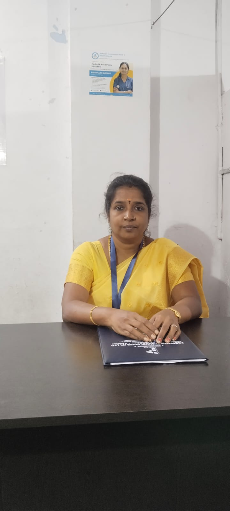

A warm, safe and joyful nursery where children aged 2–6 explore, learn and grow through play. Certified caregivers, nutritious meals & daily updates for every parent.
At Sunshine Nursery, we believe every child is unique and deserves personalised care. Our nurturing team creates a home away from home — full of laughter, learning and love.
Age-tailored programs designed to nurture each stage of your child's early development journey.
A gentle introduction to group life with sensory play, music and lots of cuddles. Focused on emotional security and early language.
Play-based learning with structured activities. Children develop social skills, creativity and pre-literacy foundations every day.
School preparation programme covering numbers, letters, social skills and classroom behaviour — setting children up for success.
A balanced routine that keeps children engaged, nourished and happy from morning to evening.
Children arrive, settle in and explore toys and activity corners freely.
Group activities, storytelling, rhymes and morning exercises.
Nutritious mid-morning snack with fresh fruits and milk.
Art, coloring, clay work and theme-based learning activities.
Chef-prepared hot meal with age-appropriate portions.
Quiet rest period in a calm, comfortable environment.
Safe playground activities, nature walks and sensory play.
Children ready with today's activity report for parents.
We offer morning, afternoon and full-day sessions to fit around your family's schedule.
CCTV monitoring, biometric entry, daily health checks and trained first-aid staff ensure your child is always safe with us.
Real-time photos, videos and activity reports sent to parents through our app. You're never out of the loop.
Chef-prepared breakfast, snacks and lunch using fresh, locally sourced ingredients. Dietary needs always accommodated.
All our teachers hold early childhood education certifications and undergo regular training in child development.
Dedicated garden area, sandpit and age-appropriate play equipment. Daily outdoor time in all seasons.
Play-based curriculum aligned with developmental milestones. Each activity is purposeful, fun and child-led.
From the moment they arrive to the moment they leave, every inch of Sunshine Nursery is designed to keep children safe, happy and healthy.
All classrooms, playgrounds and common areas are monitored with HD cameras. Parents can request live viewing anytime.
Only registered parents and authorised staff can enter. All visitors sign in with photo ID verification.
Every team member is certified in paediatric first aid. A nurse is available during school hours.
Temperature and wellness checks every morning. We maintain strict hygiene and sanitisation protocols.
All dietary requirements and allergies are recorded and strictly followed. No nuts policy on campus.
Every member of our team is carefully selected, background-checked and passionate about early childhood education.

Experienced in school readiness programmes. Helps children build confidence and skills for primary school.
Experienced in school readiness programmes. Helps children build confidence and skills for primary school.
Experienced in school readiness programmes. Helps children build confidence and skills for primary school.
Experienced in school readiness programmes. Helps children build confidence and skills for primary school.
My daughter was very shy before joining. After just two months at Sunshine, she's singing songs, making friends and actually asks to go to school. The teachers are incredibly caring and the daily photos make us feel so involved.
As a working parent, the flexible timings and real-time updates on the app are a lifesaver. I can focus on work knowing my son is safe, well-fed and having fun. The staff ratios are genuinely excellent.
My twins have been attending for over a year and the progress has been amazing. They come home every day excited to tell me what they did. The school readiness programme really prepared my older one for KG perfectly.
Limited seats available for the next term. Book your free tour today and see why Sunshine Nursery is Coimbatore's most-loved daycare.
📞 Book Your Child Slot Today